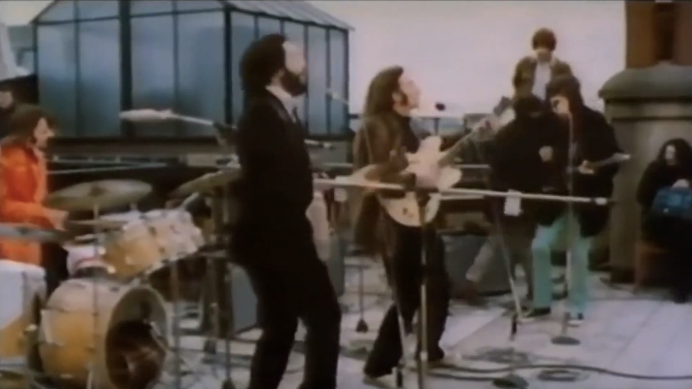

Day 11

The Beatles ◆ Don’t Let Me Down ◆ 1969
在他们不再巡演很久之后，披头士在办公室楼顶的现场演出。演奏了他们最后一张专辑 Let It Be 里的歌。我很喜欢这首歌，歌里表现了对爱人敞开心扉，但害怕爱人使自己失望的感情。
豆知识：唱这首歌的时候 John Lennon 忘词了。
豆知识：“I’ve Got A Feeling” 和 “A Day In The Life” 一样，是 John Lennon 和 Paul McCartney 把各自想出来的半首歌弄到一起而成的。话说我以前老觉得 McCartney 是 McCarthy。
Don't let me down, don't let me down
Don't let me down, don't let me down
Nobody ever loved me like she does
Oh, she does, yeah, she does
And if somebody loved me like she do me
Oh, she do me, yes, she does
Don't let me down, don't let me down
Don't let me down, don't let me down
I'm in love for the first time
Don't you know it's gonna last
It's a love that lasts forever
It's a love that had no past
Don't let me down, don't let me down
Don't let me down, don't let me down
And from the first time that she really done me
Oh, she done me, she done me good
I guess nobody ever really done me
Oh, she done me, she done me good
Don't let me down, hey, don't let me down
Heee! Don't let me down
Don't let me down
Don't let me down, don't let me let down
Can you dig it? Don't let me down